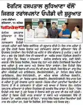
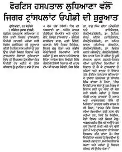
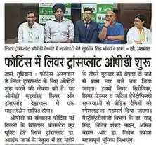
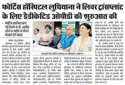
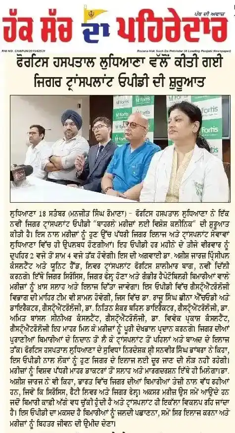
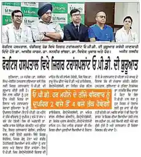
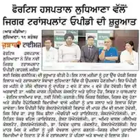

Fortis Hospital Ludhiana launches Dedicated Liver Transplant OPD, Enhancing Access to Advanced Liver Care
18 sep 2025

Ludhiana, September 18, 2025: Fortis Hospital Ludhiana has announced the launch of a dedicated Liver Transplant OPD, marking a major milestone in providing advanced liver and transplant care in the region.
The OPD will be led by Dr. Ashish George, Principal Consultant & Unit Head, Liver Transplant, Fortis Shalimar Bagh, New Delhi, and will operate from 2:00 pm to 4:00 pm on the third Thursday of every month, starting September 18, 2025. The unit will offer specialized consultations for patients suffering from advanced liver ailments including liver cirrhosis, liver failure, and complex hepatobiliary conditions.
Expert Team of Specialists
The Liver Transplant OPD will be supported by an expert team from the Department of Gastroenterology, including:
- Dr. Rajoo Singh Chhina – HOD & Director, Gastroenterology
- Dr. Nitin Shanker Behl – Director, Gastroenterology
- Dr. Amit Bansal – Senior Consultant, Gastroenterology
- Dr. Vivek Prakash – Consultant, Gastroenterology
This multidisciplinary team will ensure a holistic approach to liver disease management — from diagnosis and chronic liver treatment to pre- and post-transplant care.







Bridging Healthcare Gaps
Speaking on the occasion, Mr. Sunveer Singh Bhambra, Facility Director, Fortis Hospital Ludhiana, said:
“The launch of the Liver Transplant OPD represents a significant leap in bringing state-of-the-art healthcare closer to the community. With Dr. Ashish George and our expert team of gastroenterology specialists, patients can now access world-class consultation and guidance without the burden of traveling to distant centers. At Fortis, our endeavor is to continuously bridge healthcare gaps by delivering specialized medical services that truly make a difference in people’s lives.”
Addressing a Growing Health Concern
Dr. Ashish George emphasized the importance of early intervention, stating:
“India is witnessing a silent epidemic of liver-related ailments, with rising cases of cirrhosis, fatty liver, and liver failure among younger populations. Too often, patients seek help only at advanced stages, making transplants the only option. Our goal with this dedicated OPD is to promote early detection, timely intervention, and provide a clear pathway to advanced treatment and transplant care. By bringing world-class expertise closer to home, we aim to ensure better outcomes and an improved quality of life for our patients.”